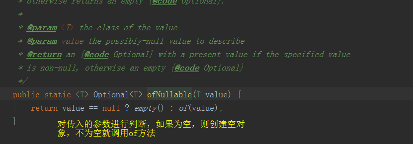
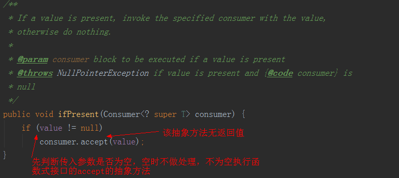
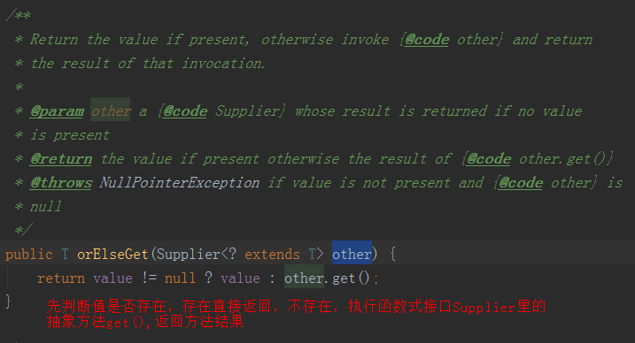
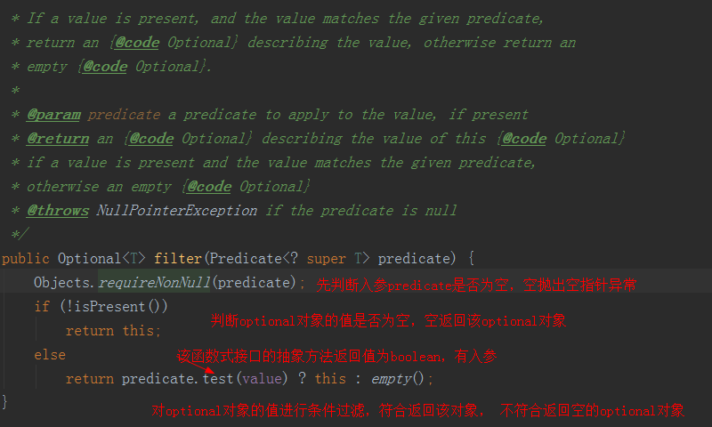
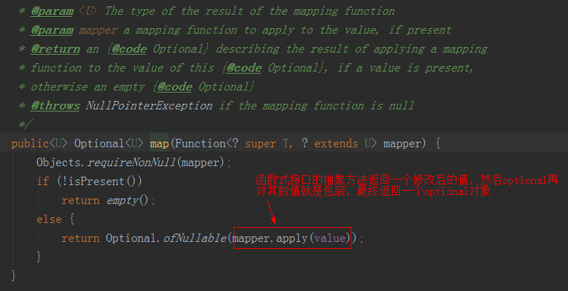
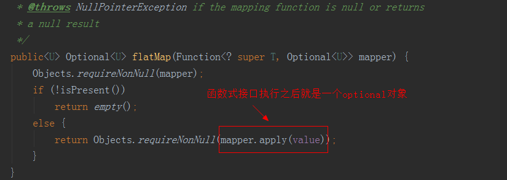

原文出处:本文由博客园博主feng_520提供。
原文连接:https://www.cnblogs.com/zhoubb/p/11610754.html
原文连接:https://www.cnblogs.com/zhoubb/p/11610754.html
作为程序员，你肯定遇到过NullPointerException, 这个异常对于初出茅庐的新人， 还是久经江湖的老手都是不可避免的痛， 可又是那么的无能为力，为了解决它，你只能在使用某个值之前，对其进行判空处理。然而这样会使得代码变得臃肿不堪。幸好jdk8引入了optional来处理了null的问题，使得我们可以不再对null做过多的关心。
先展示jdk8之前的写法
1 // First before jdk8
2 Long id = 0L;
3 User user = getUserById(id);
4 if (user != null) {
5 String name = user.getName();
6 System.out.println("name=" + name);
7 }
如果不对方法拿到的user 进行空判断，下面获取其属性很容易就会出现空指针异常。
jdk 8 写法
1 User userById = Optional.ofNullable(getUserById(id)).orElse(new User());
2 String name = userById.getName();
3 System.out.println("new name=" + name);这种写法就避免了空的判断，代码显得很简便
下面介绍下 optional 的方法
1、首先是构造 of, ofNullable, empty
1 // empty 构建空的optional对象
2 Optional<Object> empty = Optional.empty();
3
4 // of 构造user的optional 对象，user对象不为空， 如果为空，构建的时候就会报nullPointerException
5 User user = new User();
6 Optional<User> userOptional = Optional.of(user);
7
8 // ofNull 构造optional对象，内部user如果为空，就构建空的optional对象
9 Optional<User> userOptionalOfNull = Optional.ofNullable(user);
10
11 Optional<Object> objectOptional = Optional.of(null);
12 System.out.println(objectOptional);
13
14
15 Exception in thread "main" java.lang.NullPointerException
16 at java.util.Objects.requireNonNull(Objects.java:203)
17 at java.util.Optional.<init>(Optional.java:96)
18 at java.util.Optional.of(Optional.java:108)
19 at com.zbb.jdk.jdk8Test.optional.OptionalOfTest.main(OptionalOfTest.java:32)
看下ofNullable 方法源码

2、 获取 ifPresent, get, isPresent
1 Optional<User> userOptional = Optional.ofNullable(getUserById(id));
2 // isPresent 判断optional对象是否存在，如果存在，返回true, 否则返回false
3 if(userOptional.isPresent()){
4 // 已判断存在
5 // get 如果创建的Optional中有值存在，则返回此值，否则抛出NoSuchElementException
6 User user = userOptional.get();
7 System.out.println("name" + user.getName());
8 }
9
10 // 创建的Optional中的值存在，则执行该方法的调用，否则什么也不做
11 // ifPresent方法的参数是一个函数式接口， 该方法无返回值，可以直接用lambda表达式
12 userOptional.ifPresent(user -> System.out.println("name=" + user.getName()));最开始的例子也可以用isPresent来这样改，但是这样和原先判空并没有什么区别，只是方法不同而已，本质没区别，所以不推荐。看下这几个方法的源码

3、获取 orElse， orElseGet， orElseThrow
1 Optional<User> userOptional = Optional.ofNullable(getUserById(id));
2
3 //orElse 如果optional 有值就返回值，如果没有就返回一个默认值
4 // 默认值就是我们创建的一个类
5 User user = userOptional.orElse(new User("xiaohong", "123456789"));
6 System.out.println("name=" + user.getName()); // name=xiaohong
7
8 //orElseGet 如果optional有值就返回值，如果没有，就执行一个Supplier接口，返回生成的值
9 User userOrElseGet = userOptional.orElseGet(() -> new User("xiaohongGet", "123456789"));
10 System.out.println("name=" + userOrElseGet.getName()); //name=xiaohongGet
11
12 //orElseThrow 如果optional有值就返回值，如果没有，就返回一个指定的Supplier接口生成的异常
13 User userElseThrow = userOptional.orElseThrow(() -> new Exception("userOptional 为空！"));
14
15 // 为空时，抛出的异常
16 Exception in thread "main" java.lang.Exception: userOptional 为空！
17 at com.zbb.jdk.jdk8Test.optional.OptionalOrElse.lambda$main$1(OptionalOrElse.java:29)
18 at java.util.Optional.orElseThrow(Optional.java:290)
19 at com.zbb.jdk.jdk8Test.optional.OptionalOrElse.main(OptionalOrElse.java:29)看下源码

orElseThrow 同理
4、过滤 filter
1 Optional<User> userOptional = Optional.ofNullable(new User("xiao", "123456"));
2
3 //optional中的值符合条件，则返回该optional对象，否则返回空的optional对象
4 User user = userOptional.filter(u -> NAME.equals(u.getName())).orElse(new User("不满足", ""));
5 System.out.println("name=" + user.getName()); //name=xiao
5、转化 map, flatMap
1 Optional<String> optional = Optional.ofNullable("zhang,san");
2
3 //map optional对象存在就执行Funciton函数
4 // 可以返回任意类型的值
5 // 该函数式接口对optional对象中的值进行修改，返回修改后的值
6 Optional<String[]> optionalMap = optional.map(s -> s.split(",")); //Optional[[Ljava.lang.String;@19dfb72a]
7
8 // flatMap方法中的lambda表达式返回值必须是Optionl实例
9 Optional<String> optionalFlatMap = optional.flatMap(s -> Optional.of("lisi"));//Optional[lisi]

看源码知道，map 和 flatmap 都是如果optional中的值存在，就对该值执行提供的Function函数调用，返回一个optional类型的值，否
则就返回一个空的optional对象。
最大的区别是map 函数执行之后是任意的类型数据，调用结束map 会再用optional对结果进行包装，而flatmap 是执行完之后就是一个optional 实例 ，flatmap 不会对结果进行optional封装。